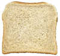

US Standard Mass (Weight)

Mass: how much matter is in an object.
We measure mass by weighing.
(See Weight and Mass to find why weight and mass are different.)
These are the most common measurements of mass:
- Ounces
- Pounds
- Tons
The Ounce

The smallest unit of mass is ounces (oz).
One ounce weighs about the same as a slice of bread. It is very light.
The abbreviation for ounce is "oz", from the 15th century Italian word "onza".
But be careful: "Ounce" and "Fluid Ounce" are different!
- Ounce is mass
- Fluid Ounce is volume
Here we talk about ounce as a mass.
When we get lots of ounces we get a new label:
The Pound
When we have 16 ounces, it can also be called a pound (lb).
1 pound = 16 ounces
The abbreviation is "lb", because it came from the Latin word "libra".
A Soccer Ball weighs about 1 lb.

Typically we use pounds to measure our own weight.
An average adult male weighs 180 lb.
Pounds are used to measure lots of things from people to food to animals.
But if something is very heavy we use yet another label:
The Ton
2,000 pounds is also one ton.
1 ton = 2,000 pounds
That is really heavy! Trucks, ships and heavy equipment are measured using tons instead of pounds.
An elephant has a mass of about 7 tons.

And this car is about 2 tons.
|
But in some countries a "ton" can mean 2,240 pounds, so to be clear use "short" and "long" in front of "ton", like this:
|
Final thoughts about measuring mass:
1 pound = 16 ounces
1 ton (also called "short ton") = 2,000 pounds = 32,000 ounces
1 long ton = 2,240 pounds
Weight or Mass?
We have used the word "weight" only because that is what people commonly say.
But we really should say "Mass". See Weight or Mass to learn more.
More About Ounces
"Ounce" normally means "Avoirdupois Ounce".
The International avoirdupois ounce is 28.349523125 grams (normal meaning of "ounce")
But precious metals and gems are often measured using the "Troy Ounce"
The International troy ounce is 31.1034768 grams
Fun fact: Because Gold is measured in troy, an ounce of gold actually weighs more than on ounce of feathers!
Further fun fact: But there are only 12 troy ounces in a troy pound (not 16 as usual), so altogether a pound of gold weighs less than a pound of feathers. Go figure.
Examples
An ounce of mass is:
- about 30 grams
- exactly 28.349523125 grams
- about a slice of bread
- about the mass of a fluid ounce of water (they are not the same thing though!)
A pound is:
- a bit less than half a kilogram
- exactly 453.59237 grams (in fact a pound has a metric definition)
A short ton is:
- about the weight of a small car
- exactly 907.18474 kilograms
A long ton is:
- very close to 1 tonne (1,000 kilograms)
- exactly 1016.0469088 kilograms